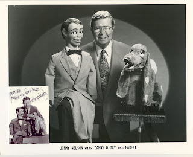

From Jimmy Nelson
3/5/2010
{kind=link}

This article is aimed at beginner ventriloquists preparing for their first public shows.
These are basic tips for first time performers.
Are you nervous?
First and foremost don’t be ashamed about being nervous. That’s natural, even for “old pros.”
The secret to overcoming that is to be prepared. That may sound obvious, but if you know your script well, particularly in the order in which you’ve memorized it you won’t let the audience throw you off if they don’t react the way you expected.
Keep that figure alive!
When you speak make him or her react to you, and when the figure speaks you must react also. You have to make the audience believe there are two people up there
talking to each other. If the figure says something funny don’t be afraid to laugh along with the audience. If he surprises you, look surprised; makes you angry, be angry. Make the audience believe you’re hearing it for the first time, just as they are.
Bring your audience into it.
Most audiences are ready to be entertained. Be prepared to let them in on little goofs. If you flub a line, laugh it off and have the figure say something like, “I’ll bet you couldn’t say that even MOVING your lips.” Or, “Would you like to start that over again? This time I’ll work your head.” If someone sneezes the figure can respond, “Gesundheidt” Then turning to you,
“That’s Italian, isn’t it?” Or, if a door slams, “Oh, leaving so soon?” Any silly remark in such a situation will almost always get a reaction. But here’s where you have to know the order of your script so you can get back to it. You can break your routine up into sections, such as 1, 2, 3, & 4.
Each section has a theme, such as jokes relating to each other. When you finish section 1, move on to section 2, then to section 3, etc. That way, if you get distracted, such as ad libing as above, you can jump back or on to the next section.
Have fun with your show.
The audience can tell if you’re enjoying what you do, and if you can make them feel that way they’ll enjoy it along with you.
Keep performing.
The more performances you do the more comfortable you will become with your material. Practice is essentional, but live performing is what hones your act and makes it more professional each time you do it.
These are basics. For more advanced tips and routines ask for “Jimmy Nelson’s Instant Ventriloquism” and “Ventriloquism 2” currently on CD available at
http://www.ventriloquism101.com/